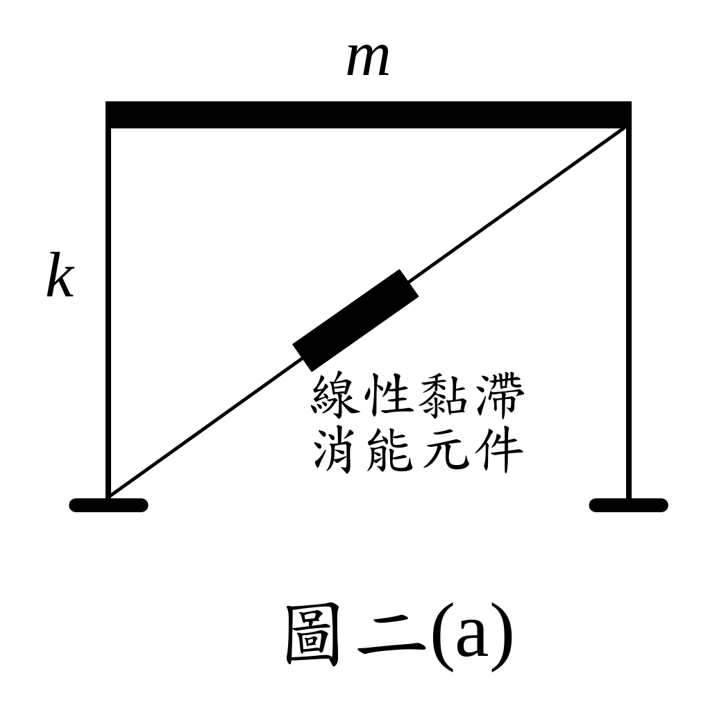
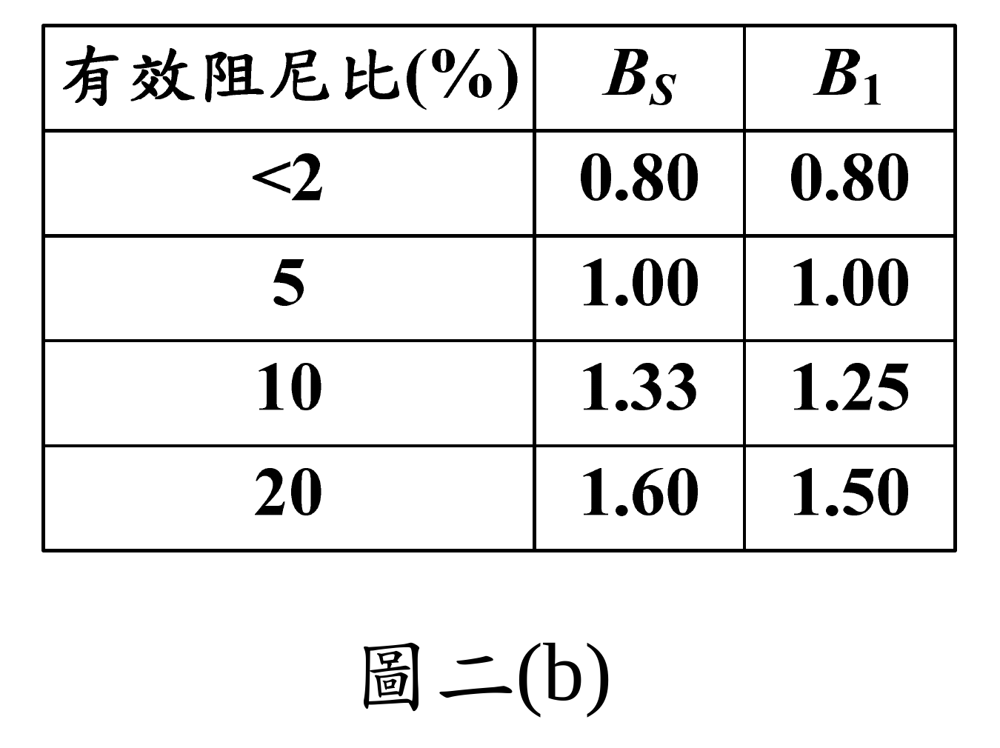
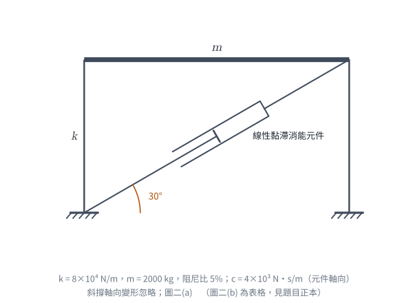
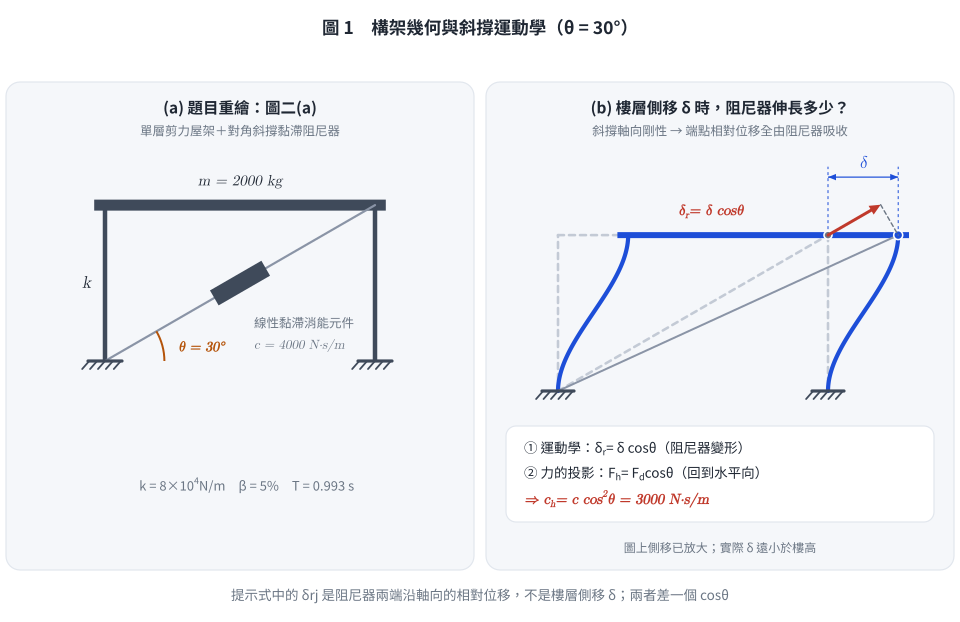
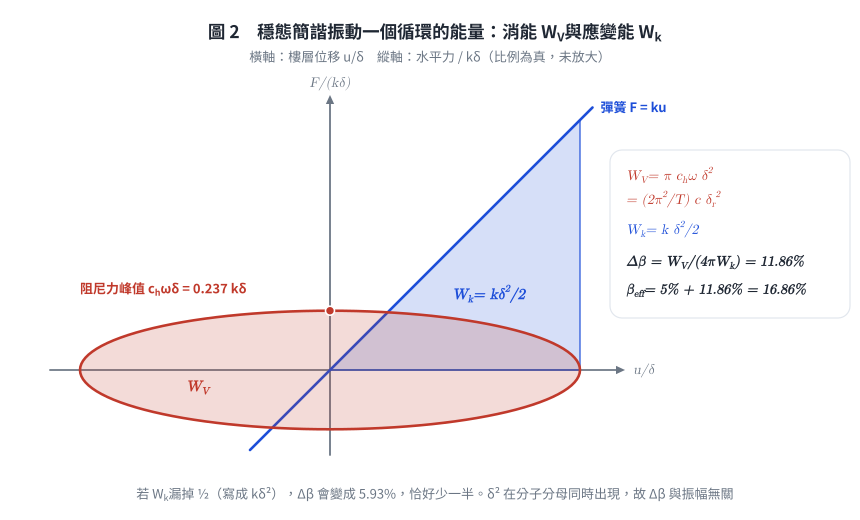
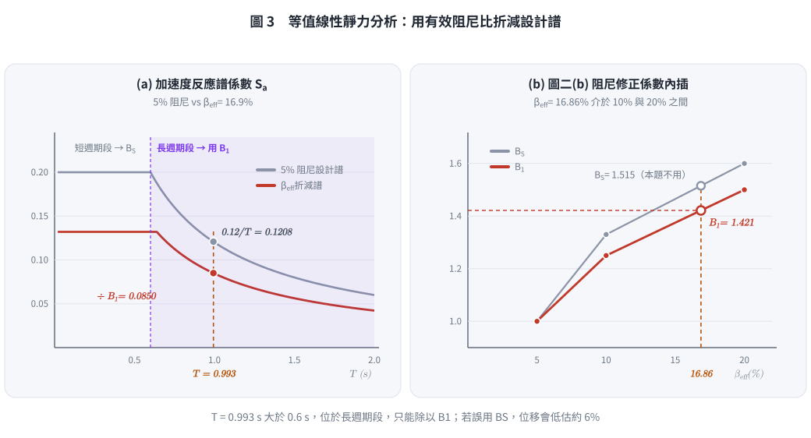
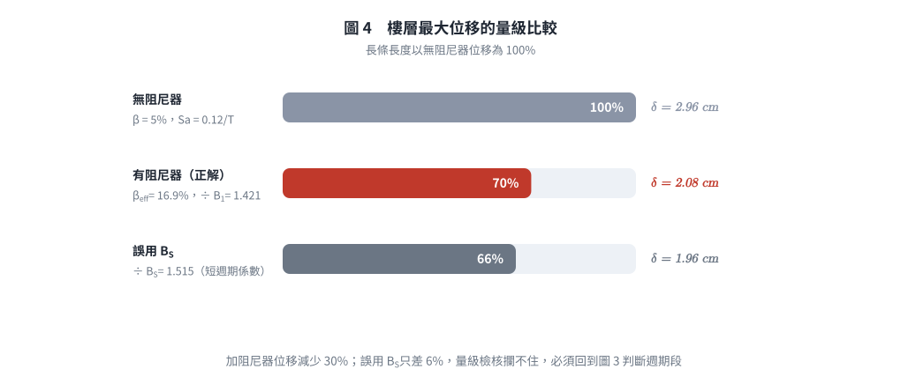

📄 題目正本：考卷原文・附圖・判讀清單（已確認）
SD-2012-2 題目正本
本檔只記錄考卷上寫了什麼、圖上畫了什麼，不含任何解法。解析見同資料夾
SD-2012-2.md。
判讀清單經使用者確認前，狀態為「待確認」；確認後本檔原則上不再修改（改動須回考卷原圖並記 log）。
| 項目 | 內容 |
|---|---|
| 考卷 | raw/exams/SD-2012_結構動力分析與耐震設計.pdf，第 2 頁（背面），第二題（地震作用引用第 1 頁第一題的 $S_a$） |
| 考年 | 2012（民國101年）專技高考結構工程技師（第2次）「結構動力分析與耐震設計」 |
| 配分 | 30 分（不分小題） |
| 附圖 | SD-2012-2-fig-1.png（圖二(a)，舊擷取，右下有游標）、SD-2012-2-fig-2.png（圖二(b)，舊擷取，左上有游標）、SD-2012-2-fig-3.png（圖二(a)）、SD-2012-2-fig-4.png（圖二(b)）（fig-3、fig-4 於 2026-11-16 由考卷 500 dpi 重擷取） |
| 判讀狀態 | 已確認（2026-11-16，使用者授權依 Claude 建議；定案：#1 $c$ 為消能元件沿其軸向的阻尼係數；#2 斜撐角度以題文 30° 為準（附圖畫約 35.5°）。原轉錄：2026-11-16 轉錄；pdftoppm 110 dpi 整頁＋450–500 dpi 局部放大，PDF 文字層核對原文；盲讀於開啟解析前完成） |
1. 考卷原文（逐字）
二、如圖二(a)所示，單層剪力屋架（樓層的側向總勁度 $k$ 為 $8\times10^4$ N/m，質量 $m$ 為 2000 kg，阻尼比為 5%）以對角斜撐方式（與水平方向之夾角為 30°）置入一線性黏滯消能元件（阻尼係數 $c$ 為 $4\times10^3\ \text{N}\cdot\text{sec/m}$，並假設與線性黏滯消能元件相接之斜撐勁度夠大而可忽略其軸向變形），並承受同第一題所述之地震作用（屋架結構能維持在線彈性），而短週期與長週期結構之阻尼比修正係數 $B_S$ 與 $B_1$ 如圖二(b)所示。請以等值線性靜力分析法，計算結構受震後樓層相對地面的最大位移（以 cm 表示）。（30 分）
（提示：$\beta_{eff}=\beta+\dfrac{\sum_j W_{Vj}+\sum_i W_{Fi}}{4\pi W_k}$，$W_{Vj}=\dfrac{2\pi^2}{T}C_j\delta_{rj}^2$）
2. 考卷給的公式、附表與參數
- 給定：$k=8\times10^4$ N/m（樓層側向總勁度）、$m=2000$ kg、結構阻尼比 5%；斜撐與水平夾角 30°；線性黏滯消能元件 $c=4\times10^3$ N·sec/m；斜撐軸向變形可忽略；線彈性。
-
地震作用「同第一題所述」：第一題（同卷第 1 頁）給 5% 阻尼比之水平加速度反應譜係數
$$S_a=\begin{cases}0.2, & T\le 0.6\ \text{sec}\\ 0.12/T, & T\ge 0.6\ \text{sec}\end{cases}$$ -
提示式照錄於 §1（$\beta_{eff}$、$W_{Vj}$）。
- 圖二(b) 阻尼比修正係數表（照錄）：
| 有效阻尼比(%) | $B_S$ | $B_1$ |
|---|---|---|
| <2 | 0.80 | 0.80 |
| 5 | 1.00 | 1.00 |
| 10 | 1.33 | 1.25 |
| 20 | 1.60 | 1.50 |
- 考卷沒有給：結構週期 $T$（須自 $k$、$m$ 求）、提示式中 $W_k$、$W_{Fi}$、$\delta_{rj}$ 的文字定義、短週期／長週期的分界週期、表列以外阻尼比的取值方式、$g$ 的數值、樓高與跨度。
- 卷首注意事項：㈠可以使用電子計算器。㈡不必抄題，作答時請將試題題號及答案依照順序寫在試卷上，於本試題上作答者，不予計分。㈢本試題之相關公式、物理常數、符號意義及設計參數未提及時，請自行合理推斷與假設。考試時間：2 小時。
3. 附圖

證據圖 SD-2012-2-fig-3.png（圖二(a)，500 dpi 重擷取；舊圖 SD-2012-2-fig-1.png 內容相同，右下有游標）

證據圖 SD-2012-2-fig-4.png（圖二(b)，500 dpi 重擷取；舊圖 SD-2012-2-fig-2.png 內容相同，左上有游標）
圖面文字照錄：m、k、線性黏滯消能元件、圖二(a)；有效阻尼比(%)、B_S、B_1、<2、5、10、20、0.80、1.00、1.33、1.60、0.80、1.00、1.25、1.50、圖二(b)
4. 判讀清單
| # | 項目 | 判讀 | 圖上／題文依據 | 把握 |
|---|---|---|---|---|
| 1 | 阻尼係數 $c$ 的方向 | 消能元件本身沿其軸向（斜撐方向）的阻尼係數，不是已換算成水平向的值 | 題文「置入一線性黏滯消能元件（阻尼係數 $c$ 為…）」，$c$ 描述的是元件；提示式 $C_j$、$\delta_{rj}$ 以元件 $j$ 編號 | 不確定（解讀）；定案採軸向，理由如左（使用者授權依 Claude 建議確認） |
| 2 | 斜撐夾角 | 與水平夾 30° | 題文明寫 30°；附圖斜撐端點 (155,715)→(905,180)（fig-3 像素）量得約 35.5°，附圖為示意，以題文為準 | 不確定（解讀）；定案 30°（使用者授權依 Claude 建議確認） |
| 3 | 斜撐端點 | 由左柱底（支承處）連到右柱頂梁柱接頭 | fig-3：斜線下端與左柱底同點、上端止於右梁柱接頭 | 確定 |
| 4 | 斜撐勁度 | 斜撐軸向變形忽略（剛性），元件兩端相對位移全來自樓層側移 | 題文「斜撐勁度夠大而可忽略其軸向變形」 | 確定（解讀） |
| 5 | 結構參數 | $k=8\times10^4$ N/m 為整層側向總勁度；$m=2000$ kg 為質量；固有阻尼比 $\beta=5\%$ | 題文；圖上 m、k 只標一次 | 確定 |
| 6 | 樓版 | 剪力屋架（樓版剛性、只平移） | 題文「單層剪力屋架」；圖上粗橫線 | 確定（解讀） |
| 7 | 柱底 | 短水平粗線，判為固定；剪力屋架側向勁度已由 $k$ 給定，柱底條件不影響答案 | fig-3 柱底短粗線（同卷圖一同畫法） | 確定（解讀） |
| 8 | 地震作用 | 第一題的 $S_a$（5% 阻尼比，以 $g$ 計的係數）；有效阻尼比不是 5% 時以圖二(b) 的 $B_S$／$B_1$ 修正 | 題文「同第一題所述之地震作用」「阻尼比修正係數 $B_S$ 與 $B_1$ 如圖二(b)」 | 確定（解讀） |
| 9 | 提示式符號 | $\beta$ 為結構固有阻尼比、$W_{Vj}$ 為第 $j$ 個黏滯元件一週期消散能量、$W_{Fi}$ 為第 $i$ 個摩擦（位移型）元件消散能量、$W_k$ 為結構應變能、$\delta_{rj}$ 為第 $j$ 個元件兩端相對位移；本題只有一個黏滯元件，無 $W_{Fi}$ | 提示式；考卷未逐字定義 | 確定（解讀） |
| 10 | 圖二(b) 表 | 四列：<2、5、10、20%；粗體表格 | fig-4 | 確定 |
| 11 | 所求 | 樓層相對地面的最大位移，以 cm 表示；指定「等值線性靜力分析法」 | 題文 | 確定 |
| 12 | 規範版本 | 反應譜、$B_S$／$B_1$ 表、提示式皆由考卷直接給定，屬題意資料，照用 | 題文 | 確定（解讀） |
| 13 | 考卷沒有給 | 週期 $T$、短／長週期分界、表列以外阻尼比的取值方式（內插與否）、$g$ 的數值、樓高與跨度 | 題文 | 確定 |
轉錄：2026-11-16（SD-U3-2 題目正本推廣・組 U3-2-G2）
確認：2026-11-16 使用者授權依 Claude 建議確認（SD-U3-2 題目正本推廣・組 U3-2-G2，關卡一）
SD-2012-2｜SDOF + 對角斜撐黏滯阻尼器：等值線性靜力分析求最大位移
題目資訊
| 欄位 | 內容 |
|---|---|
| 題號 | SD-2012-2 |
| 考年 | 2012（民國101年） |
| 科目分類 | SD-U3-2（隔減震原理） |
| 副分類 | SD-U1-3（單自由度系統動態分析） |
| 關鍵詞 | 黏滯阻尼器、對角斜撐、有效阻尼比、等值線性靜力分析法、阻尼修正係數、能量法 |
| verificationStatus | unverified |
1. 題目（考卷原文見題目正本）
考卷原文、公式／附表、附圖與判讀清單（已確認）見
SD-2012-2-problem.md。本節只列解題時最容易讀錯的地方與本解使用的記號；題意以題目正本為準。

重繪自考卷附圖，依題目正本判讀清單；本圖攔下的判讀錯誤：斜撐角度以題文 30° 為準（考卷附圖畫成約 35°）；c 是元件軸向的阻尼係數，不是水平向。
常見誤讀
| 項目 | 正確判讀 | 常見誤讀 |
|---|---|---|
| 阻尼係數 $c$ | 消能元件沿斜撐軸向的阻尼係數 $4\times10^3$ N·s/m（判讀 #1，使用者授權依建議確認） | 當成水平向阻尼係數直接用 |
| 斜撐角度 | 與水平夾 30°（題文；判讀 #2，使用者授權依建議確認） | 量附圖（約 35.5°） |
| 斜撐勁度 | 軸向剛性，元件兩端相對位移全來自樓層側移（判讀 #4） | 把斜撐與元件串聯算勁度 |
| 地震作用 | 第一題的 $S_a$（5% 阻尼、以 $g$ 計）：$T\le0.6$ s 取 0.2，$T\ge0.6$ s 取 $0.12/T$（判讀 #8） | 未判斷週期段就用 0.2 平台 |
| 修正係數 | 圖二(b) 只列 <2、5、10、20%，表列以外的取值方式考卷沒有給；本解線性內插（判讀 #13） | — |
| 週期 | 考卷沒有給，自 $k$、$m$ 求；黏滯元件不加勁度（判讀 #13） | — |
本解記號： $\theta=30^\circ$；$\beta$ 為結構固有阻尼比 5%、$\beta_{eff}$ 為有效阻尼比；$\delta$ 為樓層側移、$\delta_{r}$ 為元件沿軸向相對位移；$T=2\pi\sqrt{m/k}$。
解題步驟
步驟一：結構自然週期
阻尼器為純速度型（黏滯），不增加結構勁度，故：
$$T = 2\pi\sqrt{\frac{m}{k}} = 2\pi\sqrt{\frac{2000}{8 \times 10^4}} = 2\pi\sqrt{\frac{1}{40}} = \frac{\pi}{\sqrt{10}} \approx 0.993 \text{ sec}$$
T = 0.993 sec > 0.6 sec → 位於反應譜速度敏感區（長週期段），使用 B₁。
步驟二：斜撐黏滯阻尼器的等值阻尼貢獻
對角斜撐幾何分析（θ = 30°）：
設樓層水平位移振幅為 δ，則：
- 斜撐軸向變形（阻尼器變形）：$\delta_d = \delta \cos\theta = \delta \cos 30° = \frac{\sqrt{3}}{2}\delta$
- 水平速度 $\dot\delta$，軸向速度：$\dot\delta_d = \dot\delta \cos 30°$

圖 1 左為題目圖二(a) 的向量重繪；右為樓層側移 $\delta$ 時斜撐端點的位移分解。$\cos^2\theta$ 的兩個 $\cos\theta$ 一個來自運動學（阻尼器伸長 $\delta\cos\theta$）、一個來自力的投影（軸力回到水平向），能攔下「只乘一次 $\cos\theta$」或誤用 $\sin\theta$ 的錯誤。
能量法推導有效阻尼：
阻尼器每週期消能（WVj）：
$$W_{Vj} = \frac{2\pi^2}{T} C_j \delta_{rj}^2 = \frac{2\pi^2}{T} \cdot c \cdot (\delta\cos\theta)^2 = \frac{2\pi^2}{T} \cdot c \cdot \delta^2 \cos^2\theta$$
結構最大應變能（Wk）：
$$W_k = \frac{1}{2} k \delta^2$$
等值有效阻尼比（注意 δ² 消去，與位移振幅無關）：
$$\beta_{eff} = \beta_0 + \frac{W_{Vj}}{4\pi W_k} = 0.05 + \frac{\frac{2\pi^2}{T} \cdot c \cdot \delta^2 \cos^2\theta}{4\pi \cdot \frac{1}{2} k \delta^2}$$
$$= 0.05 + \frac{\pi \cdot c \cdot \cos^2\theta}{T \cdot k}$$
代入數值（$\cos^2 30° = \dfrac{3}{4}$）：
$$\beta_{eff} = 0.05 + \frac{\pi \times 4000 \times \frac{3}{4}}{0.993 \times 80000} = 0.05 + \frac{3000\pi}{79440}$$
$$= 0.05 + \frac{9424.8}{79440} = 0.05 + 0.1186 = 0.1686$$
$$\boxed{\beta_{eff} \approx 16.86\%}$$
物理意義： 結構阻尼 5% 與阻尼器貢獻 11.86% 合計 16.86%。等值阻尼比與位移振幅 δ 無關，符合線性黏滯阻尼器之特性。

圖 2 阻尼器力–位移橢圓的面積是每週期消能 $W_V$，彈簧三角形面積是最大應變能 $W_k=\tfrac12 k\delta^2$（比例為真）。能攔下 $W_k$ 漏掉 $\tfrac12$（$\Delta\beta$ 少一半）的錯誤，也看得出兩者都正比於 $\delta^2$，故 $\beta_{eff}$ 與振幅無關。
步驟三：查表插值求 B₁
βeff = 16.86%，介於 10% 和 20% 之間，線性內插：
$$B_1 = 1.25 + \frac{16.86 - 10}{20 - 10} \times (1.50 - 1.25) = 1.25 + \frac{6.86}{10} \times 0.25 = 1.25 + 0.172 = 1.422$$
$$\boxed{B_1 \approx 1.422}$$
步驟四：修正後之設計地震力（等值線性靜力分析法）
原 5% 阻尼反應譜加速度係數（T = 0.993 s > 0.6 s）：
$$S_a(T, 5\%) = \frac{0.12}{0.993} = 0.1208$$
有效阻尼下修正反應譜（以 B₁ 折減）：
$$S_{a,eff} = \frac{S_a(T, 5\%)}{B_1} = \frac{0.1208}{1.422} = 0.08495$$

圖 3 左為 5% 設計譜與 $\beta_{eff}$ 折減譜，$T$ 落在 $T>0.6$ s 的長週期段；右為圖二(b) 的線性內插。能攔下「誤用 $B_S$」與「週期段判斷錯誤」——這兩個錯誤只讓答案差約 6%，靠量級檢核抓不到。
等值彈性地震力：
$$F_{eff} = S_{a,eff} \times m \times g = 0.08495 \times 2000 \times 9.81 = 1667 \text{ N}$$
步驟五：最大相對位移
$$\delta_{max} = \frac{F_{eff}}{k} = \frac{1667}{80000} = 0.02084 \text{ m}$$
$$\boxed{\delta_{max} \approx 2.08 \text{ cm}}$$
驗核（以譜位移公式）：
$$S_d = S_{a,eff} \cdot \frac{T^2}{4\pi^2} \cdot g = 0.08495 \times \frac{0.993^2}{39.478} \times 9.81 = 0.08495 \times 0.02498 \times 9.81 = 0.02082 \text{ m} \approx 2.08 \text{ cm} \checkmark$$
計算彙整
| 步驟 | 參數 | 數值 |
|---|---|---|
| 1 | 自然週期 T | 0.993 sec |
| 2 | 結構阻尼 β₀ | 5% |
| 2 | 阻尼器等值阻尼貢獻 Δβ = πc cos²θ/(Tk) | 11.86% |
| 2 | 有效阻尼 βeff | 16.86% |
| 3 | 阻尼修正係數 B₁（內插） | 1.422 |
| 4 | Sa(T, 5%) = 0.12/T | 0.1208 |
| 4 | Sa,eff = Sa/B₁ | 0.08495 |
| 4 | 等值地震力 Feff | 1,667 N |
| 5 | 最大相對位移 δmax | ≈ 2.08 cm |
減震效益比較：
| 無阻尼器（ξ=5%） | 有阻尼器（ξeff=16.86%） | |
|---|---|---|
| Sa | 0.1208 | 0.08495 |
| Feff (N) | 2,370 | 1,667 |
| δmax (cm) | 2.96 | 2.08 |
| 位移折減率 | — | −30% |

圖 4 加阻尼器後位移應落在無阻尼器的六到八成之間；若算出比無阻尼器還大、或只剩一兩成，表示 $\beta_{eff}$ 或修正係數算錯。誤用 $B_S$ 的結果與正解差距很小，須回到圖 3 判斷。
解題關鍵觀念
1. 斜撐幾何：角度 θ 對阻尼效能的影響
對角阻尼器的有效水平阻尼係數 = c × cos²θ：
| θ（°） | cos²θ | 有效比例 |
|---|---|---|
| 0（水平） | 1.000 | 100%（最大效能） |
| 30 | 0.750 | 75% |
| 45 | 0.500 | 50% |
| 60 | 0.250 | 25% |
本題 θ = 30°：有效阻尼係數 = c × 3/4 = 3000 N·s/m
2. 等值黏滯阻尼比公式的物理意義
$\beta_{eff} = \beta_0 + \dfrac{W_{Vj}}{4\pi W_k}$ 來自「等效黏滯阻尼」的定義：
- 線性黏滯阻尼 ξ 之每週期消能：$W_{diss} = 4\pi \xi W_k$
- 因此：$\xi_d = W_{Vj}/(4\pi W_k)$
關鍵特性：βeff 與振幅 δ 無關（δ² 在分子分母消去），使得等值線性分析在設計過程中可獨立於位移大小。
3. Bs vs B₁ 的選用
| 修正係數 | 適用週期段 | 規範週期分界點 |
|---|---|---|
| Bs | 短週期段（加速度敏感區）T < Tc | Tc = 0.6 sec（本題） |
| B₁ | 長週期段（速度敏感區）T > Tc | — |
本題 T = 0.993 s > 0.6 s，使用 B₁。
4. 常見陷阱
- ❌ 未投影斜撐角度：以 c 直接代入公式，忽略 cos²θ 的折減
- ❌ 混用 Bs/B₁：T > 0.6 s 應用 B₁，不應用 Bs
- ❌ 誤認斜撐增加結構勁度：純黏滯阻尼器不增加勁度，T 不改變
- ❌ 漏乘 g：Sa 為無因次加速度係數，彈性力 = Sa × m × g
解析日期：2026-08-22 ｜ 正確性複核＋圖解補繪：2026-10-05（向量圖，腳本 gen_SD-2012-2.py，可重跑）
修正日期：2026-11-16（§1 改為指向題目正本，重繪附圖 figs/SD-2012-2-fig-1-problem.svg）